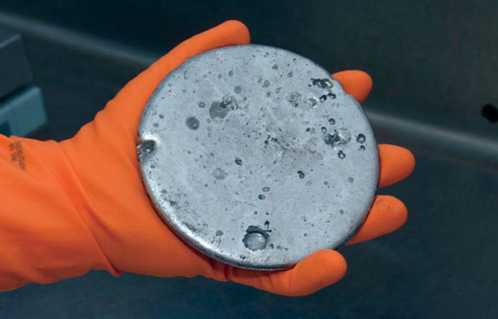

How it is done: Enriching Uranium235
 Uranium is the element with a proton number of 92 and is often used in Nuclear reactors to generate energy through Nuclear Fission. However, Uranium238, the isotope that is makes up most of the Uranium extracted from mines can not be used for these reactions and must be "enriched" in order to increase the concentration of Uranium235 which is fissionable in Light Water Nuclear reactors. The mined Uranium is converted to Uranium Hexaflouride (UF6). And then is enriched to increase the concentration of U235 to around 3-5% using the methods below.
Source: US Nuclear Regulatory Comission